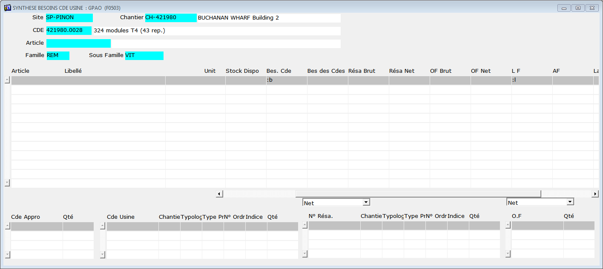
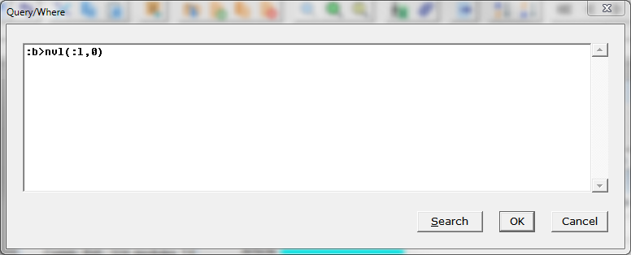

Retour
Accueil usine
Accueil agence
Prise en main
Requêtes (F2)

Sites Internet
|
|
Synthèse besoins commandes usine |
|
|
||||||||||||||||||||||||||||||||||||||||
Astuce : Pour trouver rapidement les manques, vous pouvez lancer une requête.
|
||||||||||||||||||||||||||||||||||||||||
Requête avancée... F2 > Shift+F2
Quels sont les vitrages manquants pour la commande ... ?
attention, les vitrages livrés ne le sont pas forcément pour la
commande considérée.
si le vitrage est dans plusieurs commande, il y aura une différence
entre Bes Cde et Bes des Cdes
Depuis l'écran de bilan des besoins de commande usine
compléter l'entête avec les infos connues...
site, chantier, numéro de commande, famille, sous-famille...
Se placer sur une ligne
Lancer une requête : F2
Dans la colonne Bes Cde saisir :b
demander la réponse à l'interrogation : Shift+F2
une boite de dialogue apparait , saisir :
:b>nvl(:l,0)
Traduction de la requête : afficher les besoins de la commande > qté livrée et si la valeur est null (pas de valeur) remplacer par zéro
  |